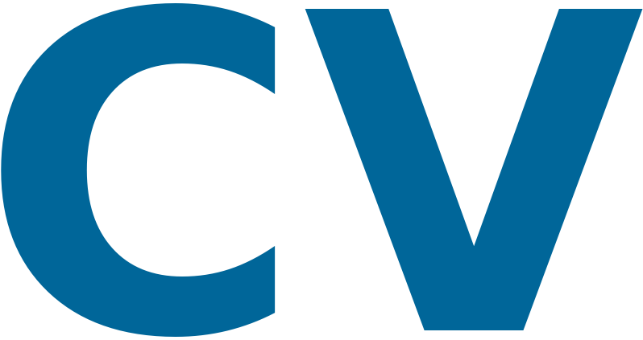
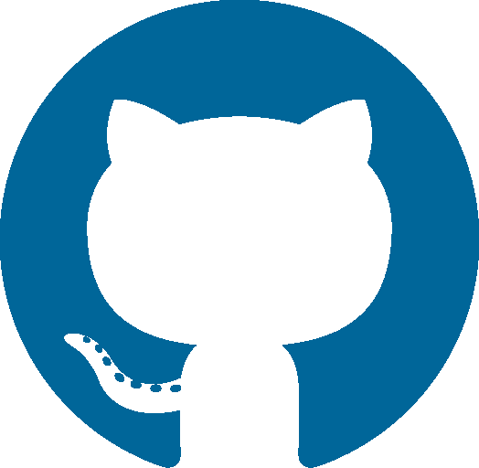

Gabriele Prato
| gabriele.prato@mila.quebec |

|
|
|

|
I am a final-year PhD candidate at Mila, University of Montreal, anticipating graduation in the spring or summer of 2025. My research focuses on the fundamental aspects of Large Language Models (LLMs). Specifically, I have explored how data segmentation influences critical functions such as parametric knowledge retrieval and latent multi-hop reasoning.
In addition to investigating these foundational dynamics, my work also seeks to address the inherent limitations of LLMs. For instance, I aim to develop methods that allow these models to better consolidate their knowledge during training, enhancing their utility and impact.
I am deeply committed to advancing the field of machine learning through open-ended research and academic exploration. My goal is to produce impactful, publishable work that contributes meaningfully to the scientific community. I am seeking research-focused roles in industry that align with these values and support my passion for driving innovation.
Publications
Blog Posts